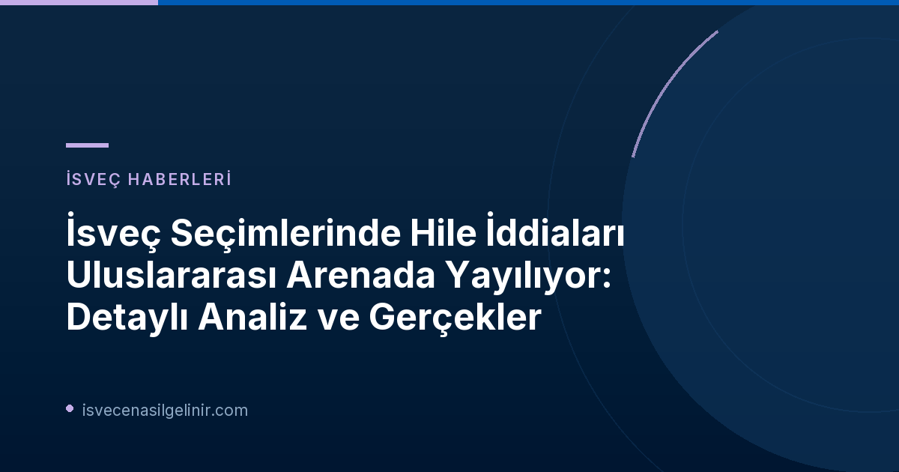

İsveç Seçimlerinde Hile İddiaları Neden Gündemde?
2026 yılı Riksdag seçimlerinin ardından İsveç, uluslararası alanda yayılan valfusk (seçim hilesi) iddialarıyla gündeme geldi. Özellikle yabancı kaynaklı ve göçmenlik karşıtı büyük sosyal medya hesapları tarafından körüklenen bu tartışmalar, Svenska institutet (İsveç Enstitüsü) Genel Direktörü Madeleine Sjöstedt'in açıklamalarına göre oldukça "kapsamlı" boyutlara ulaştı. Sjöstedt, Sveriges Radio Ekot'a yaptığı açıklamada, toplamda 100.000'den fazla farklı platformda yayın yapıldığını ve bu trafiği yönlendiren hesapların "göçmenlik karşıtı bir ortamda faaliyet gösteren ve milyonlarca takipçisi olan ağır hesaplar" olduğunu belirtti.
Dezenformasyon Kampanyasının Boyutları
- Toplam Yayın Sayısı: 100.000'den fazla farklı platformda yayın
- Ana Aktörler: Milyonlarca takipçisi olan büyük göçmenlik karşıtı hesaplar
- Ana Tema: İsveç seçimlerinde hile ve göçün seçim sonuçlarına etkisi
- İzleme Kapsamı: Svenska institutet tarafından 53 dilde medya, sosyal medya ve tartışma forumları
Dezenformasyon Kampanyalarının Arka Planı ve Hedefleri
Bu dezenformasyon kampanyalarının temel hedeflerinden biri, İsveç'in demokratik süreçlerine ve ülkenin göç politikalarına yönelik güvensizlik yaratmaktır. Hile iddiaları, aynı zamanda İsveç'e olan göçün seçim sonuçlarını etkileyip etkilemediği yönündeki tartışmalarla birleştirilerek daha geniş bir etki alanı oluşturmaktadır. Svenska institutet, bu tür etki kampanyalarını erken aşamada tespit edebilmek amacıyla 53 farklı dilde çok sayıda medya, sosyal medya platformu ve tartışma forumunu analiz etmektedir. Bu çalışmalar, İsveç'in uluslararası imajını korumak ve dezenformasyonla mücadele etmek adına büyük önem taşımaktadır.
İsveç'in demokratik yapısını ve toplumunu hedef alan bu tür dezenformasyon çabaları, özellikle hassas konularda bilgi kirliliğini artırarak kamuoyunu manipüle etmeyi amaçlamaktadır. İsveç vatandaşlık testine hazırlanırken güvenilir ve doğru bilgiye ulaşmak büyük önem taşımaktadır. İsveç’te doğru bilgilere ulaşmak ve vatandaşlık hakkınızda detaylı bilgi edinmek için sverigemedborgarskapsprov.com size rehberlik edebilir.
İsveç Medyasının Rolü ve Gerçeklik Vurgusu
Bu tür iddiaların yayıldığı bir ortamda, İsveç medyasının tarafsız ve gerçeklere dayalı habercilik anlayışı daha da önem kazanmaktadır. SVT Nyheter gibi kurumlar, haberlerinde "saklighet ve opartiskhet" (objektiflik ve tarafsızlık) ilkelerine bağlı kalarak kamuoyunu doğru bilgilendirme misyonunu üstlenmektedir. Acil durumlarda tüm bilgilerin teyit edilmesi zor olsa da, bildikleri ve bilmedikleri hakkında şeffaf olmayı taahhüt ederler. Ayrıca, sahte bilgi ve görüntülerle mücadele etmek için "SVT Verifierar" gibi inisiyatifler aracılığıyla okuyuculardan gelen şüpheleri doğrulamaktadırlar.
2026 Seçimleri ve Gelecek Perspektifleri
2026 seçimleri öncesinde ve sonrasında yaşanan bu tür tartışmalar, İsveç siyasetindeki tansiyonu ve kamuoyunun hassasiyetini göstermektedir. Hile iddiaları ve göçmenlik karşıtı söylemler, hükümet kurma süreçlerini ve siyasi partiler arasındaki diyalogları da etkileyebilir. SVT'nin haberinde, hükümet kurma sürecinin ekstra bir seçime yol açma ihtimaline karşı çıkan yorumlara da yer verilmesi, siyasi belirsizliğin bir göstergesidir. İsveç'in bu zorlu süreçten nasıl bir sonuçla çıkacağı merak konusu olmaya devam etmektedir.
Referanslar:
İsveç Vatandaşlığı ve Seçim Süreçleri Hakkında Daha Fazla Bilgi Edinin
İsveç'in siyasi süreçleri, vatandaşlık hakları ve seçim sistemleri hakkında merak ettikleriniz mi var? Doğru ve güncel bilgilere ulaşmak için kaynaklarımızı keşfedin.